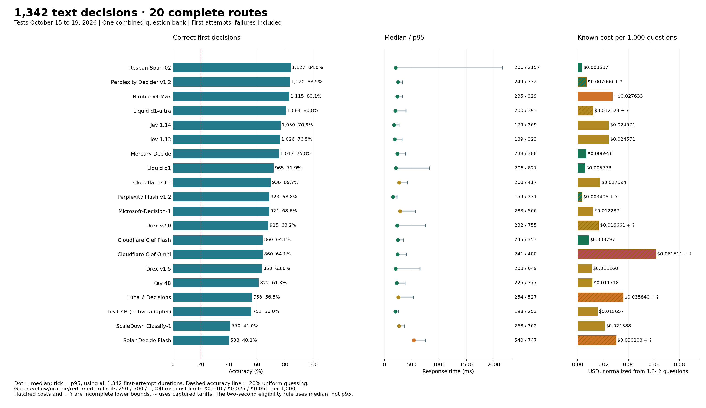
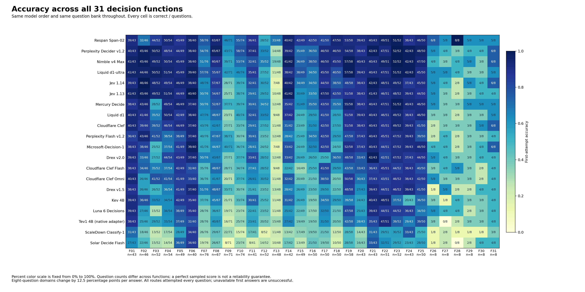

Overall accuracy, response time and cost


| Rank | Model | Correct | Accuracy | Median | p95 | Cost /1,000 | Actual run cost | Provider failures | Output failures | Test dates (2026) |
|---|---|---|---|---|---|---|---|---|---|---|
| 1 | Respan Span-02 | 1,127/1,342 | 84.0% | 206 ms | 2157 ms | $0.003537 | $0.004746 | 0 | 0 | 10-18, 10-19 |
| 2 | Perplexity Decider v1.2 | 1,120/1,342 | 83.5% | 249 ms | 332 ms | $0.007000 + ? | $0.009394 + ? | 1 | 0 | 10-18, 10-19 |
| 3 | Nimble v4 Max | 1,115/1,342 | 83.1% | 235 ms | 329 ms | ~$0.027633 | ~$0.037084 | 0 | 0 | 10-16, 10-18, 10-19 |
| 4 | Liquid d1-ultra | 1,084/1,342 | 80.8% | 200 ms | 393 ms | $0.012124 + ? | $0.016270 + ? | 1 | 0 | 10-18, 10-19 |
| 5 | Jev 1.14 | 1,030/1,342 | 76.8% | 179 ms | 269 ms | $0.024571 | $0.032974 | 0 | 0 | 10-15, 10-18, 10-19 |
| 6 | Jev 1.13 | 1,026/1,342 | 76.5% | 189 ms | 323 ms | $0.024571 | $0.032974 | 0 | 0 | 10-15, 10-18, 10-19 |
| 7 | Mercury Decide | 1,017/1,342 | 75.8% | 238 ms | 388 ms | $0.006956 | $0.009334 | 0 | 0 | 10-18, 10-19 |
| 8 | Liquid d1 | 965/1,342 | 71.9% | 206 ms | 827 ms | $0.005773 | $0.007748 | 0 | 0 | 10-18, 10-19 |
| 9 | Cloudflare Clef | 936/1,342 | 69.7% | 268 ms | 417 ms | $0.017594 | $0.023611 | 0 | 0 | 10-18, 10-19 |
| 10 | Perplexity Decider Flash v1.2 | 923/1,342 | 68.8% | 159 ms | 231 ms | $0.003406 + ? | $0.004570 + ? | 56 | 0 | 10-18, 10-19 |
| 11 | Microsoft-Decision-1 | 921/1,342 | 68.6% | 283 ms | 566 ms | $0.012237 | $0.016422 | 0 | 0 | 10-16, 10-18, 10-19 |
| 12 | Drex v2.0 | 915/1,342 | 68.2% | 232 ms | 755 ms | $0.016661 + ? | $0.022359 + ? | 40 | 0 | 10-18, 10-19 |
| 13 | Cloudflare Clef Flash | 860/1,342 | 64.1% | 245 ms | 353 ms | $0.008797 | $0.011806 | 0 | 0 | 10-18, 10-19 |
| 13 | Cloudflare Clef Omni | 860/1,342 | 64.1% | 241 ms | 400 ms | $0.061511 + ? | $0.082547 + ? | 1 | 0 | 10-18, 10-19 |
| 15 | Drex v1.5 | 853/1,342 | 63.6% | 203 ms | 649 ms | $0.011160 | $0.014976 | 0 | 0 | 10-18, 10-19 |
| 16 | Kev 4B | 822/1,342 | 61.3% | 225 ms | 377 ms | $0.011718 | $0.015725 | 0 | 0 | 10-18, 10-19 |
| 17 | Luna 6 Decisions | 758/1,342 | 56.5% | 254 ms | 527 ms | $0.035840 + ? | $0.048097 + ? | 42 | 0 | 10-15, 10-18, 10-19 |
| 18 | Tev1 4B experimental (OpenRouter native adapter) | 751/1,342 | 56.0% | 198 ms | 253 ms | $0.015657 | $0.021011 | 0 | 0 | 10-18, 10-19 |
| 19 | ScaleDown Classify-1 | 550/1,342 | 41.0% | 268 ms | 362 ms | $0.021388 | $0.028703 | 0 | 0 | 10-18, 10-19 |
| 20 | Solar Decide Flash | 538/1,342 | 40.1% | 540 ms | 747 ms | $0.030203 + ? | $0.040532 + ? | 2 | 0 | 10-18, 10-19 |
Colors use fixed absolute bands on unrounded values; cost bands apply to USD per 1,000, not whole-run dollars. p95 uses the same latency colors, while the two-second exclusion rule applies only to median. + ? and amber hatching mark incomplete known cost. ~ marks a captured-tariff calculation.
A rank tie means the same number of correct decisions. p95 colors describe tail latency, not eligibility. All complete routes remain below the two-second median limit.
What the results show
What this measures
One decision from supplied information, with five choices. No requested thinking budget, tools, explanation or iterative repair. This is System 1-style decision performance, not a comparison of unrestricted reasoning, writing or agentic work. The ranking uses every first attempt; provider failures count as unsuccessful delivered decisions and are not called wrong reasoning answers.
Span leads the combined bank
Span scored 1,127/1,342 (84.0%), Perplexity 1,120 (83.5%) and Nimble Max 1,115 (83.1%). The gaps are 7 and 12 answers. They are too small to establish a general intelligence ordering. Equal weighting of the 31 category percentages also puts Span first: 82.4%, versus Perplexity’s 79.4% and Nimble’s 79.0%. The main score remains question-weighted, so large categories contribute more questions.
Typical speed and tail speed tell different stories
Span’s median was 206 ms, with a 2.16-second p95. Perplexity’s median was 249 ms and p95 332 ms; Nimble’s were 235 and 329 ms. Span combines a short typical response with a much longer response-time tail. Its recorded cost is $0.00354 per 1,000 questions, versus $0.00700 plus one unreported attempt cost for Perplexity and approximately $0.02763 for Nimble. Span has the lowest cost among routes with complete cost reporting. All pooled medians are below two seconds. The exclusion policy uses median, not p95.
Sequential state updates and truth counting remain discriminating
Sequential procedures require applying ordered edits to the current state, such as reversing a row, swapping positions and moving an item. Span scored 33/48, Nimble 19/48, Perplexity 14/48 and Jev 1.14 7/48. For exact truth counting, which asks how many claims are true under the supplied facts, the same routes scored 46/71, 39/71, 43/71 and 28/71. Strong performance here still includes many wrong answers.
The overall leader is not strongest in every function
Forward conditionals ask what follows when facts activate chains of rules. Jev 1.14 scored 46/46, Perplexity and Nimble each 45/46, and Span 32/46. On truth-teller consistency, where whole statements must match each speaker’s type, Perplexity scored 58/74, Span 55/74 and Nimble 53/74. On one-to-one assignments, Perplexity scored 65/67 and Span 63/67; on belief tracking, Jev 1.13 scored 47/50 and Span 41/50. Belief tracking distinguishes what observers know from what actually happened.
Uncertainty and system constraints change the functional picture
Across the six uncertainty, strategy and system categories, Span scored 34/48, Perplexity 26/48, Nimble 25/48 and Jev 1.14 26/48. Span’s largest visible advantage is robust decision-making without a prior: 8/8, versus Perplexity 3/8, Nimble 4/8 and Jev 1.14 2/8. These require a worst-case action or policy, not an invented average. In information-flow security, Perplexity, Nimble and Jev 1.14 each scored 6/8, versus Span’s 5/8. Each category has eight questions. One answer changes its score by 12.5 percentage points; these are diagnostic profiles, not reliability guarantees.
Jev, Luna and a lower-cost native alternative
Jev 1.14 scored 1,030/1,342 (76.8%), Jev 1.13 1,026 (76.5%), and Luna Decisions 758 (56.5%). The Jev versions differ by 4 correct decisions overall. Assignments favor 1.14, 57/67 versus 54/67; causal intervention favors 1.13, 42/50 versus 38/50. The update is not a uniform improvement across functions. Mercury Decide scored 1,017 (75.8%), with a 238 ms median and $0.00696 per 1,000 at the captured prices. It scored 34/52 on swaps and 55/58 on priority rules, but 28/52 on necessary conditions, versus Jev 1.14’s 48/52. This is the native Mercury Decide route, not regular Mercury 2.5. Regular LLMs lack the complete expanded coverage and are not ranked here.
The full function profile


All 31 functions, all 20 model scores
| ID | Function | n | Respan Span-02 | Perplexity Decider v1.2 | Nimble v4 Max | Liquid d1-ultra | Jev 1.14 | Jev 1.13 | Mercury Decide | Liquid d1 | Cloudflare Clef | Perplexity Flash v1.2 | Microsoft-Decision-1 | Drex v2.0 | Cloudflare Clef Flash | Cloudflare Clef Omni | Drex v1.5 | Kev 4B | Luna 6 Decisions | Tev1 4B (native adapter) | ScaleDown Classify-1 | Solar Decide Flash |
|---|---|---|---|---|---|---|---|---|---|---|---|---|---|---|---|---|---|---|---|---|---|---|
| F01 | Lookup and filtering | 43 | 39/43 | 40/43 | 41/43 | 41/43 | 39/43 | 41/43 | 38/43 | 40/43 | 40/43 | 36/43 | 38/43 | 39/43 | 38/43 | 40/43 | 38/43 | 39/43 | 39/43 | 38/43 | 31/43 | 27/43 |
| F02 | Forward conditionals | 46 | 32/46 | 45/46 | 45/46 | 44/46 | 46/46 | 45/46 | 43/46 | 41/46 | 39/46 | 43/46 | 38/46 | 33/46 | 34/46 | 26/46 | 26/46 | 36/46 | 27/46 | 25/46 | 18/46 | 22/46 |
| F03 | Necessary conditions | 52 | 44/52 | 50/52 | 49/52 | 50/52 | 48/52 | 49/52 | 28/52 | 35/52 | 39/52 | 41/52 | 25/52 | 27/52 | 35/52 | 41/52 | 26/52 | 33/52 | 15/52 | 29/52 | 13/52 | 15/52 |
| F04 | Boolean scope | 54 | 50/54 | 48/54 | 50/54 | 51/54 | 49/54 | 51/54 | 49/54 | 50/54 | 46/54 | 38/54 | 37/54 | 44/54 | 37/54 | 41/54 | 36/54 | 34/54 | 34/54 | 33/54 | 17/54 | 14/54 |
| F05 | Quantifiers and sets | 49 | 43/49 | 44/49 | 45/49 | 45/49 | 46/49 | 44/49 | 46/49 | 42/49 | 44/49 | 38/49 | 41/49 | 43/49 | 42/49 | 41/49 | 41/49 | 42/49 | 38/49 | 37/49 | 28/49 | 36/49 |
| F06 | Comparisons | 40 | 38/40 | 38/40 | 38/40 | 39/40 | 38/40 | 40/40 | 37/40 | 38/40 | 37/40 | 37/40 | 39/40 | 37/40 | 32/40 | 33/40 | 37/40 | 35/40 | 35/40 | 32/40 | 34/40 | 34/40 |
| F07 | Scheduling | 76 | 58/76 | 54/76 | 51/76 | 57/76 | 48/76 | 50/76 | 50/76 | 47/76 | 43/76 | 40/76 | 41/76 | 50/76 | 35/76 | 36/76 | 51/76 | 37/76 | 28/76 | 28/76 | 26/76 | 19/76 |
| F08 | One-to-one assignments | 67 | 63/67 | 65/67 | 60/67 | 55/67 | 57/67 | 54/67 | 52/67 | 48/67 | 42/67 | 47/67 | 44/67 | 43/67 | 48/67 | 41/67 | 48/67 | 45/67 | 36/67 | 40/67 | 29/67 | 26/67 |
| F09 | Exact truth counting | 71 | 46/71 | 43/71 | 39/71 | 42/71 | 28/71 | 25/71 | 37/71 | 23/71 | 27/71 | 38/71 | 40/71 | 27/71 | 28/71 | 20/71 | 33/71 | 21/71 | 19/71 | 16/71 | 22/71 | 8/71 |
| F10 | Truth-teller consistency | 74 | 55/74 | 58/74 | 53/74 | 46/74 | 39/74 | 38/74 | 39/74 | 40/74 | 33/74 | 30/74 | 36/74 | 37/74 | 34/74 | 37/74 | 30/74 | 33/74 | 23/74 | 25/74 | 15/74 | 23/74 |
| F11 | Sufficiency and inconsistency | 41 | 36/41 | 37/41 | 32/41 | 35/41 | 32/41 | 29/41 | 30/41 | 32/41 | 29/41 | 30/41 | 28/41 | 33/41 | 27/41 | 26/41 | 21/41 | 30/41 | 22/41 | 23/41 | 17/41 | 8/41 |
| F12 | Object swaps | 52 | 28/52 | 33/52 | 35/52 | 27/52 | 30/52 | 29/52 | 34/52 | 33/52 | 27/52 | 23/52 | 24/52 | 28/52 | 28/52 | 30/52 | 23/52 | 25/52 | 23/52 | 20/52 | 8/52 | 14/52 |
| F13 | Sequential procedures | 48 | 33/48 | 14/48 | 19/48 | 11/48 | 7/48 | 10/48 | 12/48 | 9/48 | 11/48 | 12/48 | 7/48 | 12/48 | 9/48 | 11/48 | 13/48 | 11/48 | 11/48 | 15/48 | 11/48 | 10/48 |
| F14 | Temporal intervals | 42 | 40/42 | 39/42 | 41/42 | 38/42 | 40/42 | 41/42 | 35/42 | 37/42 | 31/42 | 28/42 | 33/42 | 33/42 | 22/42 | 32/42 | 28/42 | 31/42 | 25/42 | 27/42 | 13/42 | 17/42 |
| F15 | Spatial tracking | 49 | 42/49 | 35/49 | 36/49 | 38/49 | 34/49 | 30/49 | 31/49 | 24/49 | 23/49 | 25/49 | 24/49 | 26/49 | 16/49 | 20/49 | 26/49 | 26/49 | 22/49 | 19/49 | 17/49 | 13/49 |
| F16 | Reference binding | 50 | 42/50 | 36/50 | 38/50 | 34/50 | 34/50 | 33/50 | 35/50 | 29/50 | 31/50 | 34/50 | 32/50 | 26/50 | 25/50 | 21/50 | 23/50 | 19/50 | 17/50 | 19/50 | 19/50 | 21/50 |
| F17 | Beliefs and perspectives | 50 | 41/50 | 46/50 | 46/50 | 45/50 | 44/50 | 47/50 | 43/50 | 41/50 | 42/50 | 42/50 | 42/50 | 25/50 | 41/50 | 38/50 | 29/50 | 34/50 | 32/50 | 31/50 | 21/50 | 19/50 |
| F18 | Causal intervention | 50 | 47/50 | 46/50 | 45/50 | 40/50 | 38/50 | 42/50 | 35/50 | 28/50 | 27/50 | 29/50 | 24/50 | 36/50 | 29/50 | 20/50 | 22/50 | 29/50 | 21/50 | 20/50 | 12/50 | 10/50 |
| F19 | Exceptions and priorities | 58 | 53/58 | 54/58 | 57/58 | 57/58 | 48/58 | 51/58 | 55/58 | 51/58 | 51/58 | 47/58 | 52/58 | 48/58 | 43/58 | 50/58 | 48/58 | 39/58 | 47/58 | 42/58 | 28/58 | 28/58 |
| F20 | Planning | 43 | 39/43 | 38/43 | 40/43 | 39/43 | 38/43 | 38/43 | 38/43 | 39/43 | 38/43 | 37/43 | 37/43 | 33/43 | 33/43 | 30/43 | 27/43 | 24/43 | 25/43 | 28/43 | 14/43 | 16/43 |
| F21 | Directed reachability | 43 | 40/43 | 42/43 | 40/43 | 40/43 | 42/43 | 41/43 | 40/43 | 40/43 | 40/43 | 40/43 | 40/43 | 42/43 | 36/43 | 37/43 | 39/43 | 40/43 | 39/43 | 35/43 | 31/43 | 33/43 |
| F22 | Preference ordering | 51 | 49/51 | 47/51 | 49/51 | 47/51 | 48/51 | 46/51 | 47/51 | 46/51 | 45/51 | 45/51 | 44/51 | 42/51 | 45/51 | 43/51 | 44/51 | 48/51 | 44/51 | 47/51 | 29/51 | 32/51 |
| F23 | Rule counterexamples | 52 | 51/52 | 52/52 | 52/52 | 51/52 | 49/52 | 48/52 | 51/52 | 49/52 | 49/52 | 47/52 | 47/52 | 47/52 | 44/52 | 46/52 | 46/52 | 37/52 | 44/52 | 39/52 | 30/52 | 29/52 |
| F24 | Authority and stale records | 43 | 38/43 | 42/43 | 42/43 | 42/43 | 37/43 | 39/43 | 40/43 | 38/43 | 39/43 | 39/43 | 39/43 | 37/43 | 38/43 | 38/43 | 39/43 | 20/43 | 36/43 | 29/43 | 33/43 | 23/43 |
| F25 | Fault diagnosis | 50 | 46/50 | 48/50 | 47/50 | 45/50 | 45/50 | 44/50 | 46/50 | 46/50 | 41/50 | 39/50 | 46/50 | 44/50 | 40/50 | 42/50 | 41/50 | 36/50 | 34/50 | 39/50 | 25/50 | 28/50 |
| F26 | Probabilistic risk | 8 | 6/8 | 5/8 | 4/8 | 5/8 | 5/8 | 5/8 | 5/8 | 3/8 | 2/8 | 2/8 | 4/8 | 5/8 | 3/8 | 5/8 | 1/8 | 3/8 | 5/8 | 3/8 | 1/8 | 1/8 |
| F27 | Value of information | 8 | 5/8 | 4/8 | 3/8 | 5/8 | 4/8 | 3/8 | 3/8 | 3/8 | 3/8 | 4/8 | 4/8 | 4/8 | 4/8 | 3/8 | 5/8 | 1/8 | 4/8 | 0/8 | 2/8 | 2/8 |
| F28 | Robust decisions without a prior | 8 | 8/8 | 3/8 | 4/8 | 4/8 | 2/8 | 2/8 | 3/8 | 2/8 | 3/8 | 2/8 | 2/8 | 3/8 | 5/8 | 3/8 | 2/8 | 4/8 | 4/8 | 2/8 | 1/8 | 0/8 |
| F29 | Strategic decisions | 8 | 5/8 | 4/8 | 5/8 | 3/8 | 5/8 | 3/8 | 5/8 | 3/8 | 3/8 | 3/8 | 3/8 | 3/8 | 3/8 | 3/8 | 2/8 | 3/8 | 2/8 | 3/8 | 1/8 | 2/8 |
| F30 | Concurrent-history consistency | 8 | 5/8 | 4/8 | 3/8 | 3/8 | 4/8 | 4/8 | 5/8 | 3/8 | 5/8 | 3/8 | 4/8 | 4/8 | 2/8 | 2/8 | 4/8 | 3/8 | 3/8 | 3/8 | 1/8 | 4/8 |
| F31 | Information-flow security | 8 | 5/8 | 6/8 | 6/8 | 5/8 | 6/8 | 4/8 | 5/8 | 5/8 | 6/8 | 4/8 | 6/8 | 4/8 | 4/8 | 4/8 | 4/8 | 4/8 | 4/8 | 4/8 | 3/8 | 4/8 |
What all 31 function labels mean
These illustrations explain the task operators. They are not additional scored questions or answer-key entries.
| ID | Function | What it tests | Simple illustration | n |
|---|---|---|---|---|
| F01 | Lookup and filtering | Select records that meet stated conditions | Which listed request is both signed and marked urgent? | 43 |
| F02 | Forward conditionals | Apply an implication from its trigger | If an active badge grants entry and this badge is active, what follows? | 46 |
| F03 | Necessary conditions | Reason backward from a missing required condition | Every approved request needs a valid ticket; can one without a ticket be approved? | 52 |
| F04 | Boolean scope | Track combinations such as both, either and exactly one | Which choice satisfies exactly one of two stated conditions? | 54 |
| F05 | Quantifiers and sets | Track all, some, none and overlapping groups | All teal tokens are marked; no marked token is blank; which relation follows? | 49 |
| F06 | Comparisons | Combine ordered comparisons | A is taller than B and B than C; how do A and C compare? | 40 |
| F07 | Scheduling | Fit events around order and exclusion rules | Which timetable puts one meeting before another without overlapping a break? | 76 |
| F08 | One-to-one assignments | Give each item a unique partner while satisfying clues | Assign three people different desks using location restrictions. | 67 |
| F09 | Exact truth counting | Count precisely how many statements hold | Under the supplied facts, how many of six claims are true? | 71 |
| F10 | Truth-teller consistency | Find a consistent pattern of truthful and false statements | Which assignment of honest and dishonest speakers fits their claims? | 74 |
| F11 | Sufficiency and inconsistency | Determine whether facts force an answer or contradict one another | Is a proposed arrangement determined, impossible or still underdetermined? | 41 |
| F12 | Object swaps | Update locations after repeated exchanges | A red token starts in box A; several box contents are swapped; where does it end? | 52 |
| F13 | Sequential procedures | Apply each ordered edit to the current state | Toggle one flag, swap two values, then conditionally reset another flag. | 48 |
| F14 | Temporal intervals | Compare starts, ends and overlapping periods | Which interval overlaps a specified event without containing it? | 42 |
| F15 | Spatial tracking | Update position or direction from described movement | Follow successive turns and moves, then identify the final direction. | 49 |
| F16 | Reference binding | Resolve chains of names, roles and references | Identify the mentor of the colleague named in a nested description. | 50 |
| F17 | Beliefs and perspectives | Distinguish what different observers witnessed | An object moves while one observer is absent; where will that observer look? | 50 |
| F18 | Causal intervention | Recompute consequences of changing a specified input | Force a switch off while holding other inputs fixed; which lamp now lights? | 50 |
| F19 | Exceptions and priorities | Apply a rule, its exception and stated precedence | A badge permits entry unless a higher-priority suspension applies. | 58 |
| F20 | Planning | Choose an action sequence whose requirements are met | Obtain a key before opening a locked door, with limited moves available. | 43 |
| F21 | Directed reachability | Follow arrows in their permitted direction | Can node A reach node D through the listed directed links? | 43 |
| F22 | Preference ordering | Rank candidates using explicit tie-break rules | Rank by priority first, then age when priorities tie. | 51 |
| F23 | Rule counterexamples | Find a case that violates a stated rule | Which listed record disproves the claim that every approved item is signed? | 52 |
| F24 | Authority and stale records | Select the valid source rather than an outdated conflicting one | Two records disagree; which controls under the stated authority and date policy? | 43 |
| F25 | Fault diagnosis | Match observed symptoms to explicit fault rules | Which fault is consistent with the supplied test results? | 50 |
| F26 | Probabilistic risk | Choose an action by expected loss from supplied probabilities and costs. | Which action minimizes the expected cost of a possible delay? | 8 |
| F27 | Value of information | Choose whether a test is worth buying before a later decision. | Will the information change the action enough to justify its price? | 8 |
| F28 | Robust decisions without a prior | Minimize worst-case loss or regret without inventing probabilities. | Which policy has the smallest worst-case loss across permitted worlds? | 8 |
| F29 | Strategic decisions | Choose while anticipating another actor maximizing their own payoff. | Which first move is best after accounting for the other player’s response? | 8 |
| F30 | Concurrent-history consistency | Check whether overlapping operations fit a valid atomic order. | Can these read and write replies belong to one order consistent with their timing? | 8 |
| F31 | Information-flow security | Check whether observable behavior reveals a forbidden secret distinction. | Could two permitted secret states be distinguished from the public output? | 8 |
Decisions under uncertainty, strategy and system constraints
These six functions test choices beyond deterministic rule-following. Each has eight questions, and every route returned a usable first answer on all 48. The coarse sample size remains important when interpreting differences.

| ID | Function | What is decided | Simple illustration | n | Highest score routes | Correct /8 |
|---|---|---|---|---|---|---|
| F26 | Probabilistic risk | Choose an action by expected loss from supplied probabilities and costs. | Which action minimizes the expected cost of a possible delay? | 8 | Respan Span-02 | 6 |
| F27 | Value of information | Choose whether a test is worth buying before a later decision. | Will the information change the action enough to justify its price? | 8 | Respan Span-02, Liquid d1-ultra, Drex v1.5 | 5 |
| F28 | Robust decisions without a prior | Minimize worst-case loss or regret without inventing probabilities. | Which policy has the smallest worst-case loss across permitted worlds? | 8 | Respan Span-02 | 8 |
| F29 | Strategic decisions | Choose while anticipating another actor maximizing their own payoff. | Which first move is best after accounting for the other player’s response? | 8 | Respan Span-02, Nimble v4 Max, Jev 1.14, Mercury Decide | 5 |
| F30 | Concurrent-history consistency | Check whether overlapping operations fit a valid atomic order. | Can these read and write replies belong to one order consistent with their timing? | 8 | Respan Span-02, Mercury Decide, Cloudflare Clef | 5 |
| F31 | Information-flow security | Check whether observable behavior reveals a forbidden secret distinction. | Could two permitted secret states be distinguished from the public output? | 8 | Perplexity Decider v1.2, Nimble v4 Max, Jev 1.14, Cloudflare Clef, Microsoft-Decision-1 | 6 |
Valid decisions and failed requests
The main score measures delivered correct first decisions. This table separates wrong valid choices, provider or transport failures, and noncompliant model output. Accuracy among usable answers is diagnostic only; it does not replace the main denominator. Eventual correct counts include only the single recovery allowed by the original protocol.
| Model | Usable first answers | Wrong valid | Provider failures | Output failures | Accuracy among usable | Recoveries | Eventual correct /1,342 | Unknown attempt costs |
|---|---|---|---|---|---|---|---|---|
| Respan Span-02 | 1,342/1,342 | 215 | 0 | 0 | 84.0% | 0 | 1127 | 0 |
| Perplexity Decider v1.2 | 1,341/1,342 | 221 | 1 | 0 | 83.5% | 1 | 1121 | 1 |
| Nimble v4 Max | 1,342/1,342 | 227 | 0 | 0 | 83.1% | 0 | 1115 | 0 |
| Liquid d1-ultra | 1,341/1,342 | 257 | 1 | 0 | 80.8% | 1 | 1085 | 1 |
| Jev 1.14 | 1,342/1,342 | 312 | 0 | 0 | 76.8% | 0 | 1030 | 0 |
| Jev 1.13 | 1,342/1,342 | 316 | 0 | 0 | 76.5% | 0 | 1026 | 0 |
| Mercury Decide | 1,342/1,342 | 325 | 0 | 0 | 75.8% | 0 | 1017 | 0 |
| Liquid d1 | 1,342/1,342 | 377 | 0 | 0 | 71.9% | 0 | 965 | 0 |
| Cloudflare Clef | 1,342/1,342 | 406 | 0 | 0 | 69.7% | 0 | 936 | 0 |
| Perplexity Decider Flash v1.2 | 1,286/1,342 | 363 | 56 | 0 | 71.8% | 56 | 940 | 90 |
| Microsoft-Decision-1 | 1,342/1,342 | 421 | 0 | 0 | 68.6% | 0 | 921 | 0 |
| Drex v2.0 | 1,302/1,342 | 387 | 40 | 0 | 70.3% | 40 | 933 | 45 |
| Cloudflare Clef Flash | 1,342/1,342 | 482 | 0 | 0 | 64.1% | 0 | 860 | 0 |
| Cloudflare Clef Omni | 1,341/1,342 | 481 | 1 | 0 | 64.1% | 1 | 861 | 1 |
| Drex v1.5 | 1,342/1,342 | 489 | 0 | 0 | 63.6% | 0 | 853 | 0 |
| Kev 4B | 1,342/1,342 | 520 | 0 | 0 | 61.3% | 0 | 822 | 0 |
| Luna 6 Decisions | 1,300/1,342 | 542 | 42 | 0 | 58.3% | 42 | 761 | 78 |
| Tev1 4B experimental (OpenRouter native adapter) | 1,342/1,342 | 591 | 0 | 0 | 56.0% | 0 | 751 | 0 |
| ScaleDown Classify-1 | 1,342/1,342 | 792 | 0 | 0 | 41.0% | 0 | 550 | 0 |
| Solar Decide Flash | 1,340/1,342 | 802 | 2 | 0 | 40.1% | 2 | 539 | 2 |
Method, evidence and construction note
There are 1,342 questions and five choices per question. The uniform random-guess baseline is 20%. The questions include dependent variants and uneven category sizes; they are not 1,342 independent observations.
The full comparison is 20 routes × 1,342 questions = 26,840 first attempts. Actual selected HTTP attempts total 26,983, including 143 permitted recoveries. Only transport failures or actual HTTP 408/429/5xx permit one recovery. Recovered responses do not replace first attempts in the ranking or timing distribution.
Median and p95 are recomputed from all 1,342 individual first-attempt durations per route. Each attempt uses a fresh HTTPS connection and a monotonic timer from connection through the complete body. Queue time, retry waiting and recovery durations are excluded from these quantiles. p95 is the interpolated 95th percentile, not the mean of the slowest 5%.
The tests retain their captured dates, routes and loads; combining their raw measurements is not a synchronized rerun. No new calls were made for this consolidation. Returned dated identities and pins match across the selected banks; missing identities on failed calls are not silently inferred.
Nimble uses Bespoke directly; the other routes use OpenRouter with pinned providers and no fallback. Tev1 is a decision-specialized generative model using a native adapter, not a claimed nongenerative architecture.
Costs include selected primary and permitted recovery attempts, normalized as cost ÷ 1,342 × 1,000. They are recorded charges or input usage times captured tariffs, not current-price quotes or independently reconciled invoices. Nimble retains 1,134 older $0.09/million-input records and 208 records at the captured $0.04 tariff. Missing costs remain unknown; no zero is substituted.
Known cost across the cohort is $0.480883745, with 218 attempt costs unreported. Verification subscription usage is outside this native-inference accounting.
The two retired ambiguous procedure prompts are absent. Their verified replacements are included exactly once. Provider failures and invalid outputs are unsuccessful delivered decisions, but only valid wrong choices are called wrong answers. Latency on a failed request may measure time to rejection.
This remains a developing benchmark. Thirty-seven author-development cases are included in this exploratory overview and retain their permanent exclusion from a future held-out scored release. The JSON preserves that policy; no new release acceptance is implied.
All 206 expansion questions have current-revision blind Sol xhigh and different-model Opus or Argon checks. Exact computational evidence supplements model review. The original bank received a targeted difficult-item audit, not independent external verification of every original question.
Construction history: the corrected 1,136-question bank, 200 verified expansion questions and six additional truth-teller questions are now pooled into one view. The six domains each contain two foundation questions and six more demanding candidates. The charts do not split scores by construction stage.
Sixteen regular-LLM configurations have only the earlier 1,136-question coverage. They remain in that reference report and are not assigned an expanded score, extrapolated, or ranked here. Solar Decide remains excluded for latency; the distinct Solar Decide Flash route remains included. No existing published row was removed.
The full question bank is downloadable without answers, grouped by category in CSV, JSONL and plain text. JSONL preserves the exact model-independent native input packets and hashes. Corrected prompts appear once; retired ambiguous prompts are absent. No answer keys, certificates, verifier responses, private author metadata or credentials are included.
The public bundle contains the consolidated graphics, aggregate statistics and all answer-free question inputs. The separate image benchmark is unchanged. No new inference was performed for this consolidation.
Earlier regular-LLM reference: 1,136-question comparison. Image decisions remain a separate benchmark.